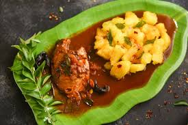
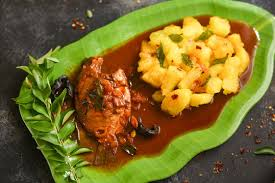

Carmel food blog is famous for providing south Indian dishes in a affordable price.Carmel Food blog is started on Feb 17 2023. The following dishes like dosai,poore masala,aapam chicken kuruma,pongal,sweet rotte,puttu and chikpeas curry,Puttu&chikpeas curry available.Foods are very delicious and satisfying the customers with hygenic foodsüçî.South Indian cuisine is one of the most popular native cuisines of India. It is primarily a combination of the food of the five states of Andhra Pradesh, Karnataka, Telangana, Tamil Nadu and Kerala, and the union territories of Pondicherry, Lakshadweep and Andaman and Nicobar Islands. The cuisines all use spices unique to the region and the cuisines majorly differ in the level of spiciness.
South Indian food is known for the use of generous coconut in their curries. Other basic and common ingredients include curry leaves, mustard oil, red chillies and oil etc. Here we have tried to demystify and explain the different cuisines of South India. Have a look!.South Indian cuisine includes the cuisines of the five southern states of India—Tamil Nadu, Andhra Pradesh, Karnataka, Kerala and Telangana—and the union territories of Lakshadweep, and Pondicherry. There are typically vegetarian and non-vegetarian dishes for all five states. Additionally, all regions have typical main dishes, snacks, light meals, desserts, and drinks that are well known in all over the world.Tamil Nadu food is a combination of spicy and non spicy dishes. People generally consume non vegetarian curries with steamed rice. The food is majorly Saiva (vegetarian food) and Asaiva (non- vegetarian food). They also have various snacks like Medu Vada and popular desserts like Payasam, to their credit. Chettinad cuisine is a famous subdivision of the Tamil Nadu cuisine that is known for its spicy and aromatic dishes. The hot, pungent dishes are sprinkled with ground spices.1.DOSA:Dosas are not only the traditional breakfast of South India but also the most popular comfort food all across the country. They are prepared when a batter of fermented rice and lentils is smeared on a pan. Masala Dosas have a filling of aloo sabzi inside them. These days you can try different variants of dosas like rawa dosa, tomato dosa, cheese dosa and more.[1.DOSAI ]Appam is a feathery light crepe like dish that is made with a batter of fermented rice flour and coconut milk. Considered to be a delicacy in South India, Appam is best served with Ishtu (better known as stew). Among the stew- you can choose between chicken, mutton, beef or vegetable stew. Ishtu is also made in coconut gravy infused with mild spices.Aapam Chicken Curry is a delicious and popular South Indian dish. It is a combination of soft, lacy, and fluffy rice pancakes called Aapam paired with a rich, flavorful chicken curry. Aapam is made from fermented rice and coconut batter, and the chicken curry is usually mildly spiced with aromatic herbs and a creamy coconut base.In a large pan, heat oil and ghee (if using) over medium heat.
Add fennel seeds (if using) and let them splutter, then add chopped onions and sauté until they turn golden brown.
Add ginger-garlic paste and green chilies, and sauté for 2-3 minutes until fragrant.Serve the Aapam with the hot Chicken Curry on the side. The mild and fluffy texture of Aapam complements the rich, creamy, and spicy chicken curry perfectly.[2.AAPAM
]Appam is a feathery light crepe like dish that is made with a batter of fermented rice flour and coconut milk. Considered to be a delicacy in South India, Appam is best served with Ishtu (better known as stew). Among the stew- you can choose between chicken, mutton, beef or vegetable stew. Ishtu is also made in coconut gravy infused with mild spices.Aapam Chicken Curry is a delicious and popular South Indian dish. It is a combination of soft, lacy, and fluffy rice pancakes called Aapam paired with a rich, flavorful chicken curry. Aapam is made from fermented rice and coconut batter, and the chicken curry is usually mildly spiced with aromatic herbs and a creamy coconut base.In a large pan, heat oil and ghee (if using) over medium heat.
Add fennel seeds (if using) and let them splutter, then add chopped onions and sauté until they turn golden brown.
Add ginger-garlic paste and green chilies, and sauté for 2-3 minutes until fragrant.Serve the Aapam with the hot Chicken Curry on the side. The mild and fluffy texture of Aapam complements the rich, creamy, and spicy chicken curry perfectly.[2.AAPAM ].Cook the washed and cubed tapioca in a pressure cooker with approximately four cups of water, salt, chilli and turmeric powder. Cook it till it becomes very soft and mushy.
When the tapioca is cooked, release the steam and drain the extra water.
Put the tapioca back on the stove, add a little bit of water, and some more salt, turmeric and chilli powder if you wish. Mash it well and stir.
In a blender, take the coconut, garlic, cumin seeds, and curry leaves and blend them to a coarse paste.
Add this mixture to the tapioca pulp and stir. Check the mixture for salt again.
When the mixture congeals and becomes a thick, gooey mass, remove from the stove.
Now, place a pan on the stove, and heat some coconut oil and add some curry leaves to it. Take it off the stove, pour it over the Tapioca pulp and mash again.
Enjoy the Kappa Kizhangu with Fish Curry.Fish Recipes are most popular posts in this blog. I have over 50 recipes using fish already posted with step by step pictures. Born and brought up in Kanyakumari which is known for its sea food cuisine. Fish takes part in our menu almost daily.[3.KAPPA&MEAN CURRY]Pongal is one of the most important Hindu festivals and is widely celebrated in the southern state of Tamil Nadu. Pongal is a four-day festival held in the month of Thai which is the 10th month of the Tamil calendar. On this day, people get up early and worship the sun. Among other rituals, people make sure to prepare some of the traditional dishes that not only honour the occasion but also keep cultural values alive. Here are 5 traditional Pongal dishes and their significance.[4.Pongal
].Cook the washed and cubed tapioca in a pressure cooker with approximately four cups of water, salt, chilli and turmeric powder. Cook it till it becomes very soft and mushy.
When the tapioca is cooked, release the steam and drain the extra water.
Put the tapioca back on the stove, add a little bit of water, and some more salt, turmeric and chilli powder if you wish. Mash it well and stir.
In a blender, take the coconut, garlic, cumin seeds, and curry leaves and blend them to a coarse paste.
Add this mixture to the tapioca pulp and stir. Check the mixture for salt again.
When the mixture congeals and becomes a thick, gooey mass, remove from the stove.
Now, place a pan on the stove, and heat some coconut oil and add some curry leaves to it. Take it off the stove, pour it over the Tapioca pulp and mash again.
Enjoy the Kappa Kizhangu with Fish Curry.Fish Recipes are most popular posts in this blog. I have over 50 recipes using fish already posted with step by step pictures. Born and brought up in Kanyakumari which is known for its sea food cuisine. Fish takes part in our menu almost daily.[3.KAPPA&MEAN CURRY]Pongal is one of the most important Hindu festivals and is widely celebrated in the southern state of Tamil Nadu. Pongal is a four-day festival held in the month of Thai which is the 10th month of the Tamil calendar. On this day, people get up early and worship the sun. Among other rituals, people make sure to prepare some of the traditional dishes that not only honour the occasion but also keep cultural values alive. Here are 5 traditional Pongal dishes and their significance.[4.Pongal ].Some of the dishes are only Listed below.For main dishes Visited our website.
].Some of the dishes are only Listed below.For main dishes Visited our website.